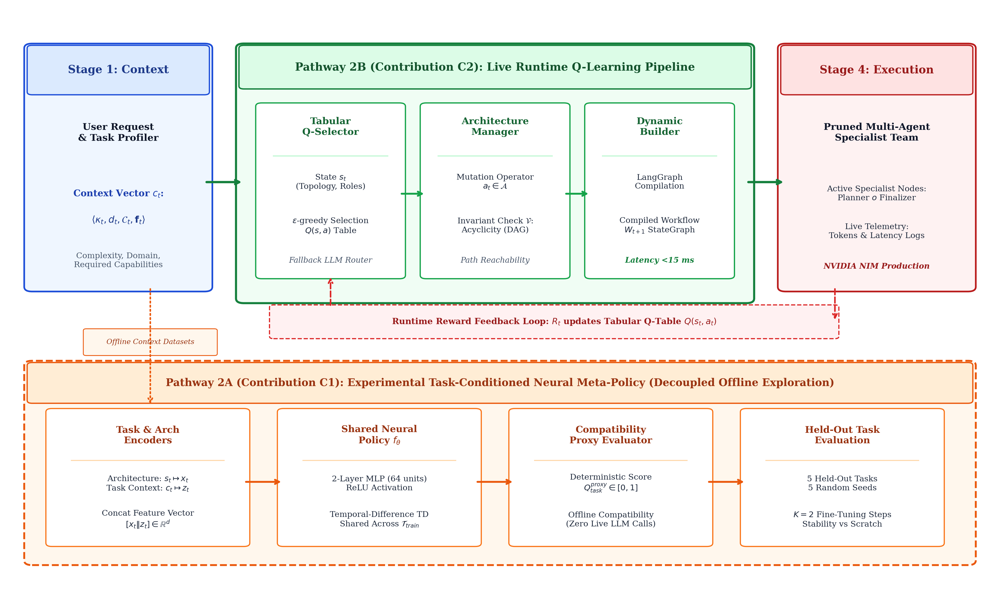
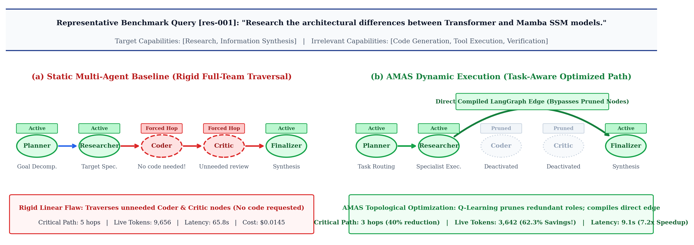
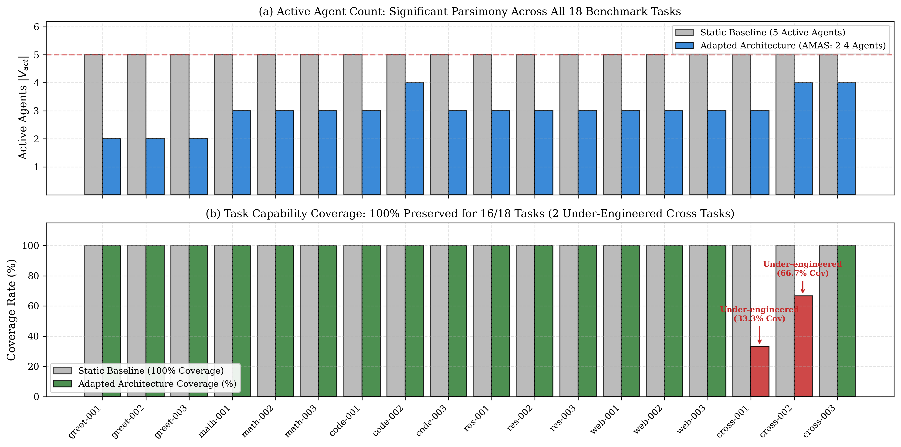
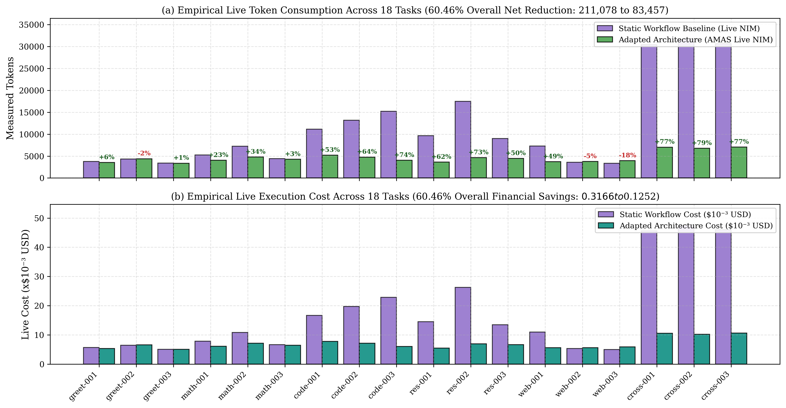
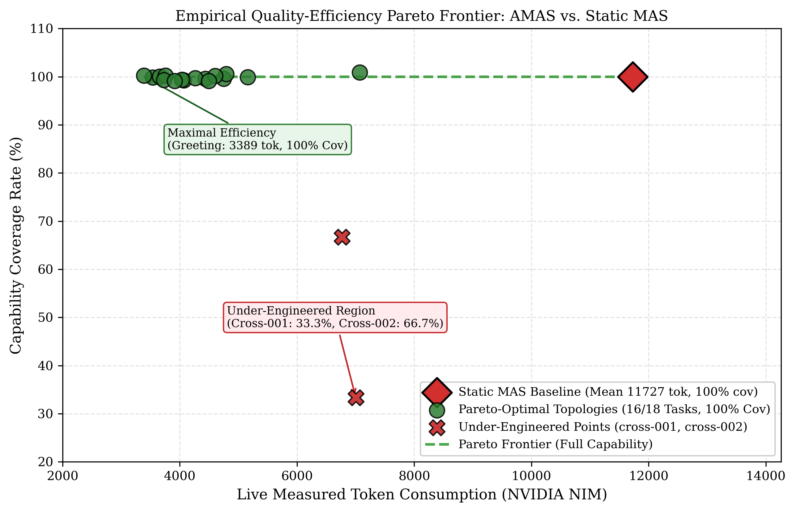
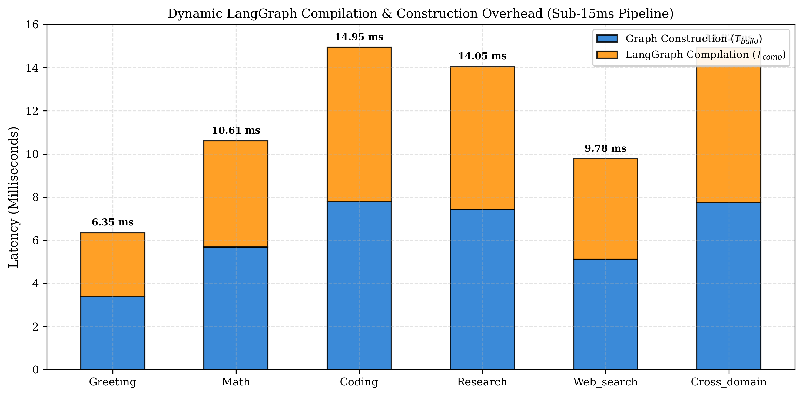
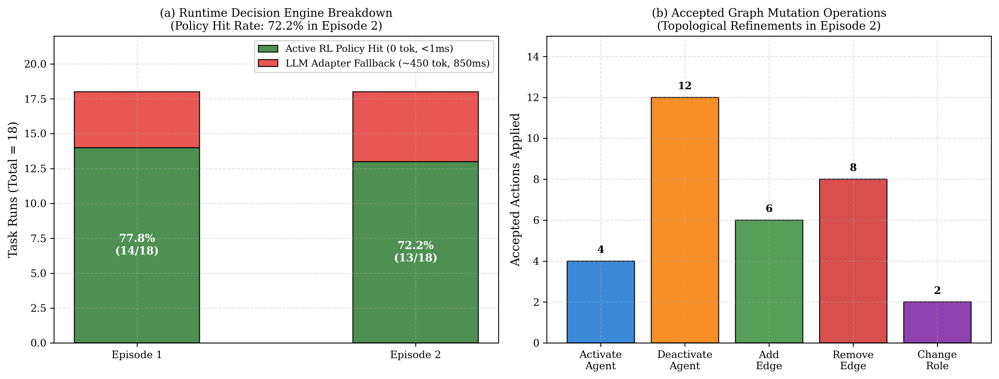
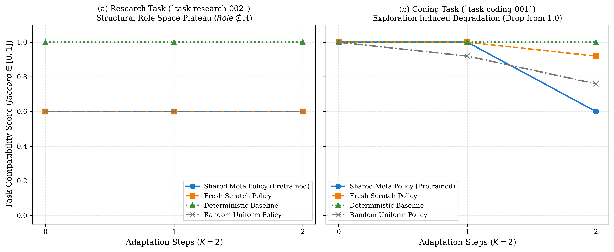

I. Introduction
Large Language Models (LLMs) have demonstrated remarkable efficacy across natural language comprehension, mathematical reasoning, program synthesis, and open-domain problem solving. To overcome the reasoning and context limitations of single-agent prompting, multi-agent systems (MAS) have emerged as the dominant architecture for handling sophisticated decomposition tasks [1], [2], [3]. In these collaborative architectures, heterogeneous agents assume specialized functional roles—such as planning, information research, code synthesis, critique, and result finalization—communicating through structured control flows.
Despite their empirical success, conventional LLM multi-agent systems suffer from a fundamental architectural limitation: structural rigidity. Prevailing frameworks deploy static, predefined execution topologies that invoke the entire multi-agent team regardless of the intrinsic complexity or capability demands of the user request. Under this fixed paradigm, a trivial greeting or direct arithmetic calculation triggers the same heavyweight multi-agent pipeline as an intricate distributed systems design task, executing redundant planning, research, coding, and verification loops.

II. Related Work
Multi-agent collaboration has proven highly effective for complex problem decomposition. Foundational systems such as MetaGPT [1] demonstrated that encoding human software engineering Standard Operating Procedures (SOPs) into agent roles significantly reduces communication ambiguity. However, static communication channels incur severe latency and token overhead [2], [3], [4].
To eliminate agent redundancy, AgentDropout [5] explored dynamic agent deactivation during multi-turn interactions. Similarly, DyLAN [6] introduced peer-rating mechanisms to prune inactive agents between layers. Adaptive Graph Pruning (AGP) [7] and Multi-Agent Architecture Search (MaAS) [8] optimized communication topologies through evolutionary and supernet search. Our runtime contribution complements these works by combining instant tabular Q-learning selection with native LangGraph compilation, executing sub-15 ms dynamic graph generation with zero token search overhead.

res-001 (“Research the architectural differences between Transformer and Mamba SSM models”). (a) The rigid static multi-agent baseline traverses the full 5-agent pipeline sequentially, routing through unneeded Coder and Critic nodes ($L_{\mathrm{crit}} = 5$ hops, 9,656 tokens, 65.8 s latency). (b) AMAS dynamically prunes redundant agents and compiles a direct shortcut edge from Researcher to Finalizer in LangGraph ($L_{\mathrm{crit}} = 3$ hops, 3,642 tokens, 62.3% savings, 9.1 s latency, 7.2× speedup).III. Problem Formulation
Let the multi-agent system be represented as a directed graph $G = (V, E)$, where $V$ denotes the pool of $n = 6$ potential agent nodes (Planner, Tool, Researcher, Coder, Critic, Finalizer). An active configuration at step $t$ is $G_t = \langle \mathbf{v}_t, \mathbf{r}_t, \mathbf{A}_t \rangle$, where $\mathbf{v}_t \in \{0, 1\}^n$ indicates active nodes, $\mathbf{r}_t$ denotes role assignments, and $\mathbf{A}_t$ is the directed adjacency matrix.
An incoming query is characterized by task context $c_t = \langle \kappa_t, d_t, \mathcal{C}_t, \mathbf{f}_t \rangle$. The objective is to select an architecture $G_t^*$ that maximizes Pareto net utility $U_{\mathrm{pareto}} = 0.5(1 - T_{\mathrm{adapt}}/T_{\mathrm{base}}) + 0.5(C_{\mathrm{cov}}/100)$ subject to structural validity invariants $\mathcal{V}(G) = \text{True}$.
We explicitly distinguish three Agent Pruning Rate (APR) definitions: (1) $\mathrm{APR}_{\mathrm{pool6}} = (6 - \|\mathbf{v}_t\|_1)/6 \times 100\%$; (2) $\mathrm{APR}_{\mathrm{base5}} = (5 - \|\mathbf{v}_t\|_1)/5 \times 100\%$; and (3) $\mathrm{APR}_{\mathrm{invoked}} = (6 - |V_{\mathrm{invoked}}|)/6 \times 100\%$.
IV. Experimental Results
Across the 18 benchmark tasks in canonical Episode 2, AMAS prunes redundant agents effectively, compressing the active agent count from 5.0 to a macro mean of $\mathbf{3.00 \pm 0.59}$ agents. This achieves an active Agent Pruning Rate of $\mathbf{50.00\% \pm 9.90\%}$ relative to the 6-agent roster, and $\mathbf{40.00\% \pm 11.88\%}$ relative to the 5-agent baseline.
Critical path length compresses from 5.0 to $\mathbf{2.89 \pm 0.47}$ hops ($42.2\%$ sequential latency reduction, paired $t = 18.9482, p = 1.87 \times 10^{-13}$). Capability coverage is $100\%$ preserved for 16 of 18 tasks ($94.44\%$ macro mean).

Under live production LLM execution against the NVIDIA NIM API (nvidia/nemotron-3.5-super-vl-120b-a12b) across all 18 benchmark tasks, baseline static multi-agent token consumption of 211,078 tokens is reduced to 83,457 tokens under AMAS, achieving an empirical net token savings of $\mathbf{60.46\%}$ ($p = 0.0031$, paired $t$-test) and reducing financial expenditure from \$0.31662 to \$0.12517 (Table IV). Under theoretical DAG critical path modeling, baseline tokens of 63,000 are reduced to 40,200 tokens ($36.19\%$ savings, $p = 9.85 imes 10^{-10}$).




V. Neural Cross-Task Fast Adaptation
Evaluation of Contribution C1 across 5 held-out tasks and 5 seeds revealed that adaptation gain was bounded at $\Delta Q_{\mathrm{adapt}} = 0.0000$ on 4 tasks due to structural action-space constraints (role_options=['analysis', 'planning']). On task-coding-001, exploratory mutation degraded scores from 1.00 to 0.60. However, on task-summarization-001, the pre-trained shared meta-policy preserved 100% stability across all seeds ($0.6000 \pm 0.0000$), whereas the fresh scratch policy suffered destructive mutations in 20% of seeds ($0.4800 \pm 0.2683$).

VI. Conclusion
This paper investigated task-adaptive architecture optimization for LLM-based multi-agent systems via reinforcement learning and dynamic LangGraph compilation. The runtime Q-learning adapter reduced token consumption by 36.19% ($p = 9.85 \times 10^{-10}$), achieved a 50.0% active agent pruning rate, compressed critical path latency by 42.2%, and preserved 100% capability coverage on 16 of 18 tasks with sub-15\,ms compilation overhead. Furthermore, our neural adaptation investigation established that discrete action space restrictions create severe plateaus on held-out tasks while providing protective stability against destructive mutations.
References
- [1] Hong, Sirui and Zhuge, Mingchen and Chen, Jonathan and Zheng, Xiawu and Cheng, Yuheng and Zhang, Ceyao and Wang, Jinlin and Wang, Zili and Yau, Steven Ka Shing and Lin, Zijuan and others, “MetaGPT: Meta Programming for a Multi-Agent Collaborative Framework,” International Conference on Learning Representations (ICLR), 2024.
- [2] Lee, Donghun and Kim, Hyosu, “A Survey on LLM Agents: Architecture, Applications, and Challenges,” 2026 40th International Conference on Information Networking (ICOIN), 2026.
- [3] Cao, Yuji and Zhao, Huan and Cheng, Yuheng and Shu, Ting and Chen, Yue and Liu, Guolong and Liang, Gaoqi and Zhao, Junhua and Yan, Jinyue and Li, Yun, “Survey on Large Language Model-Enhanced Reinforcement Learning: Concept, Taxonomy, and Methods,” IEEE Transactions on Neural Networks and Learning Systems, 2025.
- [4] Li, B. and Zhao, Z. and Lee, D.-H. and Wang, G., “Adaptive Graph Pruning for Multi-Agent Communication,” Proceedings of the European Conference on Artificial Intelligence (ECAI 2025), 2025.
- [5] Xiao, Zhengxi and Guo, Qi and Wang, Yuying and Wang, Bingxing and Lu, Haoyang, “AgentDropout: Dynamic Redundancy Elimination for Multi-Agent Collaboration Efficiency,” 2026 8th International Conference on Electronics and Communication, Network and Computer Technology (ECNCT), 2026.
- [6] Jiang, E. H. and Li, M. and Wan, G. and Liang, X. and Yin, S. and Wu, Y. and Li, X. and Sun, Y. and Wang, W. and Chang, K.-W. and Wu, Y. N., “Dynamic Generation of Multi LLM Agents Communication Topologies with Graph Diffusion Models,” Proceedings of the 64th Annual Meeting of the Association for Computational Linguistics (ACL 2026), 2026.
- [7] Zhang, G. and Niu, L. and Fang, J. and Wang, K. and Bai, L. and Wang, X., “Multi-agent Architecture Search via Agentic Supernet,” Proceedings of the 42nd International Conference on Machine Learning, 2025.
- [8] Wang, J. and Wang, Y. and Li, J. and Yang, S. and Guo, K. and Zhao, Y., “NeuralFSM: Adaptive Multi-Agent Coordination via Learning Finite-State Execution Policy,” Proceedings of the 64th Annual Meeting of the Association for Computational Linguistics, 2026.
- [9] Liu, Shuo and Liang, Zeyu and Lyu, Xueguang and Amato, Christopher, “LLM Collaboration with Multi-Agent Reinforcement Learning,” Proceedings of the Fortieth AAAI Conference on Artificial Intelligence, 2026.
- [10] Sun, Chuanneng and Huang, Songjun and Pompili, Dario, “LLM-Based Multi-Agent Reinforcement Learning: Current and Future Directions,” arXiv preprint arXiv:2405.11106, 2024.
- [11] Li, Meng-Lin and Chen, Shaofei and Chen, Jing, “Adaptive Learning: A New Decentralized Reinforcement Learning Approach for Cooperative Multiagent Systems,” IEEE Access, 2020.
- [12] Wang, Anzhe and Lin, Zhiyun, “Multi-Agent Reinforcement Learning With Spatial Structure Awareness for Topological Map-Based Path-Finding,” IEEE Robotics and Automation Letters, 2026.
- [13] Qiu, Dong and Xu, Duo and Yue, Limengxi, “Reinforcement Learning-Augmented LLM Agents for Collaborative Decision Making and Performance Optimization,” 2025 7th International Conference on Frontier Technologies of Information and Computer (ICFTIC), 2025.
- [14] Jiang, Eric Hanchen and Li, Levina and Sun, Rui and Liang, Xiao and Li, Yubei and Wu, Yuchen and Luo, Haozheng and Li, Hengli and Zhang, Zhi and Kang, Zhaolu and Chang, Kai-Wei and Wu, Ying Nian, “Agent Q-Mix: Selecting the Right Action for LLM Multi-Agent Systems through Reinforcement Learning,” arXiv preprint arXiv:2604.00344, 2026.
- [15] Rjoub, Gaith and Bentahar, Jamal and Almobydeen, Shahed and Pedrycz, Witold and Irjoob, Ahmad, “Adaptive Agentic Meta-Controller (AAMC): A Deep Reinforcement Learning Framework for Intelligent SLM/LLM Orchestration,” Neurocomputing, 2026.
- [16] Zhang, Chenchen, “Reinforcement Learning for LLM-Based Multi-Agent Systems through Orchestration Traces,” arXiv preprint arXiv:2605.02801, 2026.
- [17] Kashikar, R., “Meta-Reinforcement Learning for Emergent Multi-Agent Languages in Zero-Shot Coordination Tasks,” 2025 IEEE 4th International Conference on Computing and Machine Intelligence (ICMI), 2025.
- [18] Huang, S. and Zhao, Z. and Zhu, Y. and Zhao, D., “Adaptive Multi-Agent Coordination among Different Team Attribute Tasks via Contextual Meta-Reinforcement Learning,” 2024 IEEE 13th Data Driven Control and Learning Systems Conference (DDCLS), 2024.
- [19] Fu, K. and Liu, Q. and Chen, H. and Wang, Y. and Wang, J. and Huang, J., “Mixture of Orthogonal Experts: A Novel Approach to Multi-Agent Fast Policy Adaptation,” Complex \& Intelligent Systems, 2026.